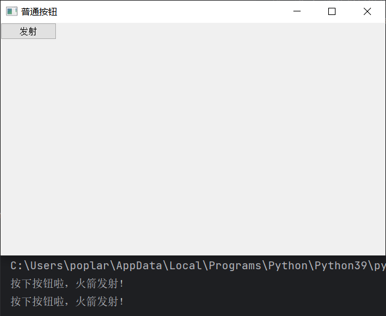

<!DOCTYPE lake>
<h2 data-lake-id="OUUfx" id="OUUfx"><span data-lake-id="uf669a808" id="uf669a808">QPushButton</span></h2><p data-lake-id="u49421a77" id="u49421a77"><span data-lake-id="u5691d7f0" id="u5691d7f0">常见的按钮实现类包括:</span><code data-lake-id="u5ef1c613" id="u5ef1c613"><span data-lake-id="u176f2548" id="u176f2548">QPushButton</span></code><span data-lake-id="u160315e0" id="u160315e0">、</span><code data-lake-id="ua128e04f" id="ua128e04f"><span data-lake-id="u02dbda1b" id="u02dbda1b">QRadioButton</span></code><span data-lake-id="ue24e8858" id="ue24e8858">和</span><code data-lake-id="uc05eb5b9" id="uc05eb5b9"><span data-lake-id="uc3ccaf49" id="uc3ccaf49">QCheckBox</span></code></p><p data-lake-id="uf1cfeb73" id="uf1cfeb73"><span data-lake-id="u95bfe765" id="u95bfe765">​</span><br/></p><p data-lake-id="ue310c5ce" id="ue310c5ce"><code data-lake-id="ubafccd48" id="ubafccd48"><span data-lake-id="u8af17201" id="u8af17201">QPushButton</span></code><span data-lake-id="u0723e8f5" id="u0723e8f5">是最普通的按钮控件，可以响应一些用户的事件</span></p><span class="yuque-card-unsupported">[codeblock]</span><p data-lake-id="ud8b803bd" id="ud8b803bd"><span data-lake-id="ue5786f9f" id="ue5786f9f">运行程序:</span></p><p data-lake-id="uebc5f499" id="uebc5f499"></p>